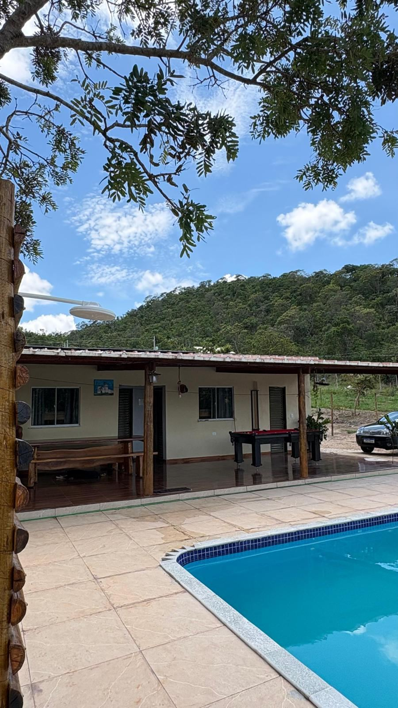
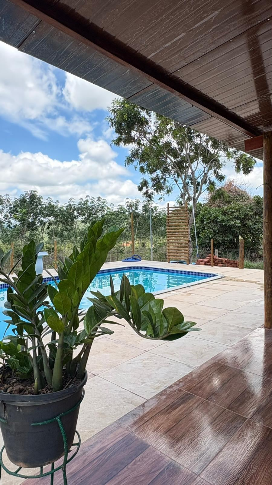
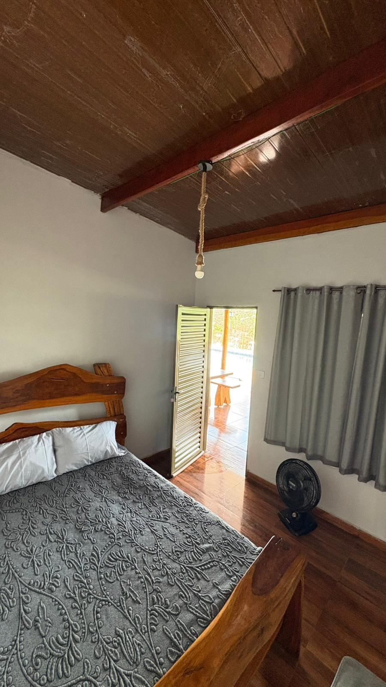
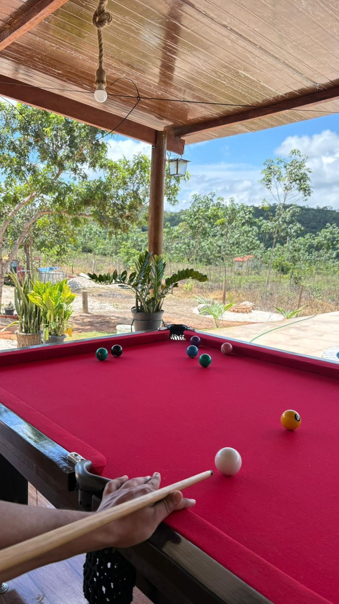
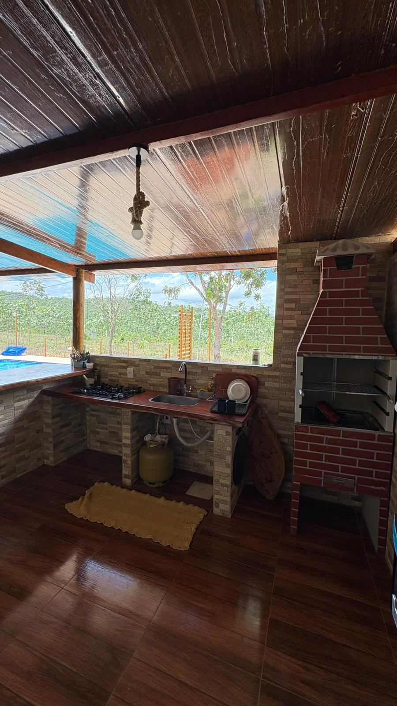
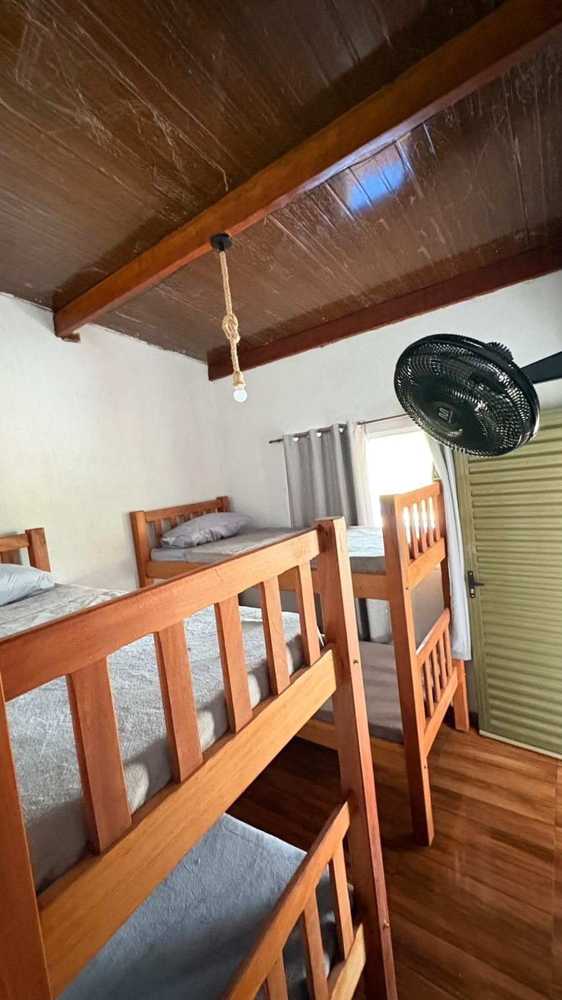
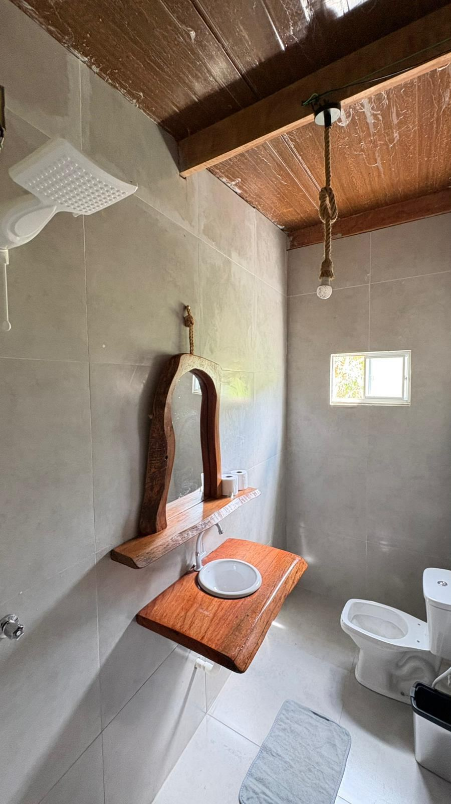

A chácara
Um lugar para desacelerar
Entre a natureza, o silêncio e os bons momentos, o Refúgio das Araras foi pensado para quem quer sair da rotina e aproveitar Pirenópolis de um jeito diferente.
- Privacidade
- Natureza
- Conforto
- Lazer


Pirenópolis • Goiás
Desconecte da rotina, respire ar puro e viva momentos especiais em um espaço reservado para você, sua família e seus amigos.
A chácara
Entre a natureza, o silêncio e os bons momentos, o Refúgio das Araras foi pensado para quem quer sair da rotina e aproveitar Pirenópolis de um jeito diferente.
A estrutura
Refresque-se durante os dias quentes de Goiás.
Prepare refeições e reúna quem você ama.
Momentos de confraternização sem pressa.
Lazer para adultos e grupos.
Noites especiais ao redor do fogo.
Praticidade para preparar suas refeições.
Conectividade quando você precisar.
Mais praticidade durante sua estadia.
Seu companheiro também pode aproveitar.
Feito sob medida

Uma pausa para respirar e recarregar.

Espaço para estar junto e criar memórias.

Piscina, churrasqueira, sinuca e fogueira.

Um cenário especial para comemorar.
Acomodação
Quartos simples e confortáveis, pensados para receber famílias e grupos de amigos com privacidade.


Registros
Mais do que uma hospedagem
Ao redor
A propriedade fica em uma região tranquila e reservada, próxima do centro histórico e das paisagens naturais que fazem de Pirenópolis um dos destinos mais procurados de Goiás.
Cachoeiras, trilhas, gastronomia local e o charmoso Centro Histórico estão por perto, prontos para completar a sua estadia — enquanto a chácara garante o silêncio e o espaço para descansar entre um passeio e outro.
Localização
Região da BR-070, Condomínio Contendas — próxima ao centro histórico de Pirenópolis e às atrações naturais da região.
Como chegarPirenópolis • Goiás • Brasil
BR-070 / Condomínio ContendasReservas
Consulte disponibilidade e planeje sua próxima estadia em Pirenópolis.
Reconhecimento
Booking.com
Baseado em 5 avaliações — um número ainda pequeno, mas com nota máxima.
Poucas avaliações até o momento, todas muito positivas.